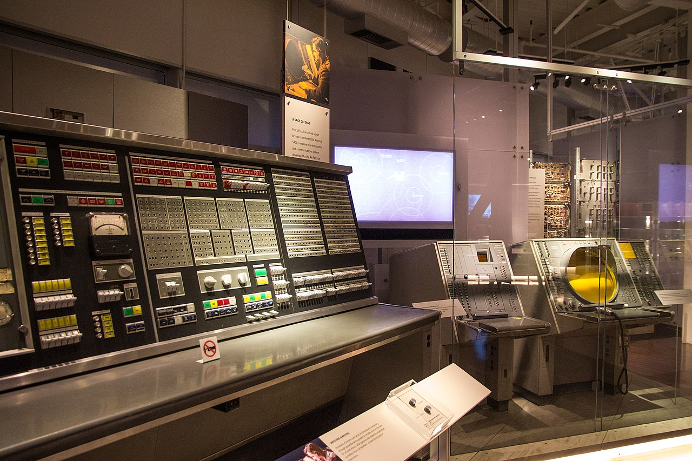
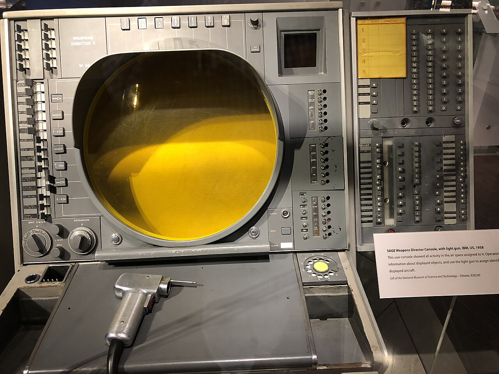

In the tense early years of the Cold War, the United States faced an existential threat that moved at the speed of sound. The Soviet Union had successfully tested its own atomic bomb in 1949, and by the early 1950s, it possessed the Tu-4 and the more advanced Tu-95 "Bear" bombers—aircraft capable of delivering nuclear payloads across the Arctic and into the heart of American cities. The problem for U.S. air defense was not just the power of these weapons, but the speed of the data. Radar stations along the coast and the northern frontiers generated a constant stream of information that had to be manually plotted by human operators on Plexiglas boards. By the time a "blip" was identified, identified as hostile, and a course was charted for an interceptor, the target might already be hundreds of miles away. The "human bottleneck" was the greatest vulnerability in the American defense shield.
To solve this, the United States military embarked on one of the most ambitious technological projects in history: the Semi-Automatic Ground Environment, or SAGE. At its heart was the AN/FSQ-7 Combat Direction Central—a machine so massive it remains, decades later, the largest discrete computer system ever built. Weighing over 250 tons and occupying half an acre of floor space, the FSQ-7 was more than just a computer; it was the birthplace of real-time computing, modern networking, and the interactive graphical user interface.
The journey to the AN/FSQ-7 began not with a bomber, but with a flight simulator. In the late 1940s, Jay Forrester and his team at MIT’s Project Whirlwind were attempting to build a high-speed flight trainer for the Navy. Most computers of the time, like the ENIAC or the EDVAC, were "batch processors." They took a deck of cards, crunched numbers for hours, and spat out a result. But a flight simulator needed to respond instantly to a pilot's input. It needed to work in "real time."
As the Navy's interest in the project waned, the Air Force saw a new potential for Whirlwind: air defense. If a computer could process radar data as it arrived, it could provide a unified "air picture" of the entire North American continent. This realization transformed Whirlwind from an academic experiment into a military necessity. However, Whirlwind had a fatal flaw: its memory. It used electrostatic storage tubes (Williams tubes) that were notoriously unreliable and slow. To make SAGE work, a more robust form of memory was needed.
"We needed a memory that would work for months, not minutes. The future of air defense depended on the machine never missing a beat." — Jay Forrester on the development of core memory.
In 1951, Forrester hit upon the idea of using tiny ferrite rings—magnetic cores—threaded onto a wire grid. This "magnetic-core memory" was a revolutionary leap forward. It was non-volatile, extremely fast for its time, and, most importantly, incredibly reliable. It became the technological bedrock upon which the AN/FSQ-7 would be built.

Building the AN/FSQ-7 was a task of unprecedented scale. The Air Force turned to IBM, which was then a leader in punched-card machinery but was still establishing its dominance in the burgeoning computer market. The contract for SAGE was a turning point for the company. It was so large that at one point, over 7,000 IBM employees—nearly 20% of its workforce—were dedicated to the project.
Each SAGE Direction Center was housed in a massive, windowless four-story concrete block known as a "CC" (Combat Center) or "DC" (Direction Center). Inside, the environment was carefully controlled. The heat generated by the computer’s 49,000 to 60,000 vacuum tubes was so intense that the building required a massive air conditioning system that could have cooled several thousand homes. To ensure 100% reliability—a requirement for a system watching for nuclear attack—IBM implemented a "duplex" design. Each site had two identical AN/FSQ-7 computers. One would be active ("hot"), while the other was in "hot standby," constantly being updated with the same data. If the active computer failed, the standby would take over in seconds. This was the first major implementation of high-availability, fault-tolerant computing.
Perhaps the most visionary aspect of the AN/FSQ-7 was how humans interacted with it. In the "Blue Room" of a SAGE center, dozens of operators sat at glowing consoles. Instead of reading lines of text or looking at printouts, they saw a graphical representation of the airspace. Friendly aircraft were represented by one symbol, unidentified targets by another.
To interact with these targets, operators used a "light gun"—a precursor to the light pen and, eventually, the computer mouse. By pointing the light gun at a target on the CRT screen and pulling the trigger, an operator could "select" that target. The computer would then display its speed, altitude, and course. This was the first time a computer screen had been used as an interactive, graphical tool for command and control. It laid the groundwork for everything from modern air traffic control to the graphical user interfaces we use on our phones and laptops today.

The hardware of the FSQ-7 was matched in complexity by its software. At the time, "software engineering" as a discipline didn't exist. Programs were typically a few hundred or a few thousand lines of code. The SAGE software, however, eventually exceeded 500,000 lines of code—an astronomical figure for the 1950s. The task was so large that IBM and MIT had to spin off a new organization, the System Development Corporation (SDC), specifically to train the army of programmers needed to write and maintain the code.
The language developed for SAGE was JOVIAL (Jules' Own Version of the International Algorithmic Language), named after Jules Schwartz, one of the project's lead developers. JOVIAL was one of the first high-level languages designed for real-time systems and would remain a standard for military software for decades. The project also pioneered the concept of the "Common Data Buffer," allowing different parts of the system to share information seamlessly—a precursor to modern database systems.
While the SAGE system was eventually superseded by more advanced satellite and solid-state radar systems, its technological legacy is almost immeasurable. The AN/FSQ-7 was the first system to demonstrate that computers could be linked together over long distances using telephone lines. This required the development of the first modems, which translated digital computer data into analog signals that could travel over the existing phone network. This wide-area networking was the direct conceptual ancestor of the ARPANET and, ultimately, the Internet.
The expertise IBM gained from SAGE led directly to the development of the SABRE airline reservation system. Developed for American Airlines in the early 1960s, SABRE used FSQ-7-style networking and real-time processing to allow travel agents across the country to book flights instantly. It was the first civilian application of the real-time revolution started by SAGE.
Furthermore, the AN/FSQ-7 became a cultural icon. Even after they were decommissioned in the 1980s, the blinking lights and impressive toggle-switch panels of the FSQ-7 found a second life in Hollywood. They appeared in countless science fiction movies and television shows, including Logan's Run, The Time Tunnel, and Capricorn One. For a generation of moviegoers, the AN/FSQ-7 was the look of the "supercomputer."
The AN/FSQ-7 stands as a monument to a specific moment in time—the intersection of Cold War anxiety and the dawn of the Digital Age. It was a machine built for the grimmest of purposes: to coordinate the defense against a nuclear holocaust. Yet, in building it, the engineers at MIT, IBM, and the Air Force invented the tools that would define the modern world. Every time we look at a map on a screen, send a message over a network, or book a flight online, we are using technologies that can trace their lineage back to the massive, vacuum-tube-filled halls of the SAGE Direction Centers.
At the Mimms Museum, we preserve several panels from an original AN/FSQ-7, including a Weapons Director Console. Standing before it, one can almost hear the hum of the cooling fans and see the ghostly green glow of the CRT as it scanned the skies for shadows that, thankfully, never came.
The IBM AN/FSQ-7 was the centerpiece of the SAGE (Semi-Automatic Ground Environment) air defense system. Built during the 1950s to detect Soviet bombers, it was the first system to use interactive CRT displays, light guns, and real-time networking. Each of the 23 sites across North America housed two of these 250-ton machines for 24/7 reliability. Its legacy includes the birth of the software engineering profession and the first modems.